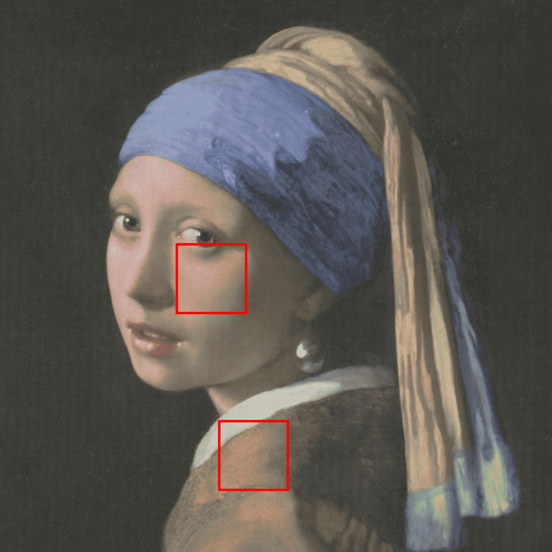
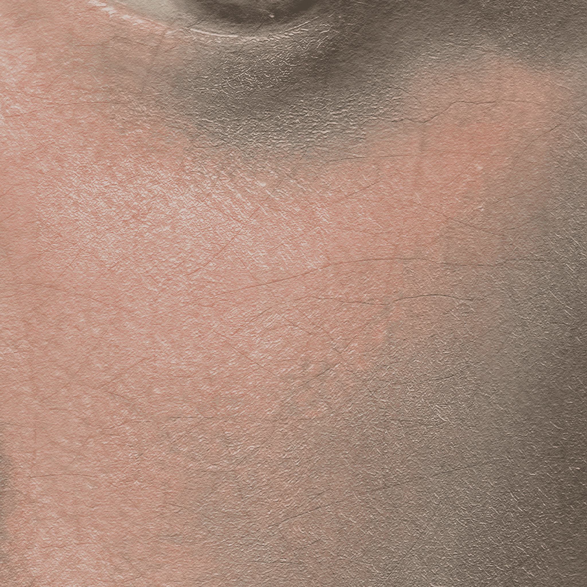

Abstract
The ability to learn compact, high-quality, and easy-to-optimize representations for visual data is paramount to many applications such as novel view synthesis and 3D reconstruction. Recent work has shown substantial success in using tensor networks to design such compact and high-quality representations. However, the ability to optimize tensor-based representations, and in particular, the highly compact tensor train representation, is still lacking. This has prevented practitioners from deploying the full potential of tensor networks for visual data.
To this end, we propose `Prolongation Upsampling Tensor Train (PuTT)', a novel method for learning tensor train representations in a coarse-to-fine manner. Our method involves the prolonging or `upsampling' of a learned tensor train representation, creating a sequence of `coarse-to-fine' tensor trains that are incrementally refined. We evaluate our representation along three axes: (1). compression, (2). denoising capability, and (3). image completion capability. To assess these axes, we consider the tasks of image fitting, 3D fitting, and novel view synthesis, where our method shows an improved performance compared to state-of-the-art tensor-based methods.
Overview
Our Prolongation Upsampling Tensor Train (PuTT) method progressively learns a Quantized Tensor Train (QTT) representation of a visual object, starting from a coarse resolution and refining it through multiple upsampling steps. In our process, we begin with a down-sampled version of the object and iteratively 'Upsample' and learn finer representations. Each time we upsample we prolong the QTT with an additional core. The training process is stabilized by using upsampled priors, ensuring convergence to optimal solutions.

Full coarse-to-fine learning, integrating 'Train' and 'Upsample' phases. We start with input \(I_D\), which is downscaled to \(I_{D-l}\) (resolution \(2^{d-l} \times 2^{d-l}\)). A QTT is then randomly initialized for \(I_{D-l}\). After training this QTT up to iteration \(i_1\), we proceed with upsampling, producing \(T_{D-l+1}\) of length \(D-l+1\). This represents a grid at resolution \(2^{d-l+1} \times 2^{d-l+1}\) and requires sampling from a newly downsampled target \(I_{D-l+1}\) of the same resolution.
Compression Results
PuTT achieves high-quality results even at high compression ratios. Here, we present detailed comparisons for a 16k image of Girl With Pearl Earrings with a compression factor of 200.
Full View
PuTT
TT No Up
CP
Tucker
Full View
These full-scale views offer detailed comparisons between PuTT and baseline methods for the a Tokyo 16k image, focusing on tensor network methods with a compression factor of 200.


Incomplete Data
Visual comparison of PuTT against baseline methods under three scenarios of training on incomplete data. We use images with a 4k resolution and each model has a compression factor of 30. The first three images display training data with 99%, 95%, and 90% missing data, respectively. Use the buttons below to view results for each scenario, comparing PuTT and baseline methods with and without upsampling. The top row showcases results with upsampling, while the bottom row presents outcomes without upsampling.


Number of Upsampling Steps - Noisy Data
Here we present a side-by-side visual comparison of TT No Upsampling and our PuTT with 7 upsampling steps. The example showcases their performance on a 4k image affected by Gaussian noise (σ=0.5) at a compression factor of 30.
Novel View Synthesis
Rendered test views if the Materials and Mic scenes using a 12MB PuTT model.
Near and Far Views
Visual comparisons of the Near and Far views of TensoRF and PuTT.